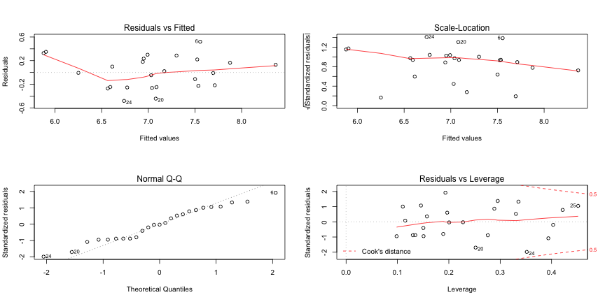

Summit Suen
Taiwan R User Group
wine <- read.csv(file = "wine.csv", header = TRUE)
model1 <- lm(Price ~ AGST + HarvestRain + Age + FrancePop + WinterRain, data = wine)
summary(model1)
##
## Call:
## lm(formula = Price ~ AGST + HarvestRain + Age + FrancePop + WinterRain,
## data = wine)
##
## Residuals:
## Min 1Q Median 3Q Max
## -0.48179 -0.24662 -0.00726 0.22012 0.51987
##
## Coefficients:
## Estimate Std. Error t value Pr(>|t|)
## (Intercept) -4.504e-01 1.019e+01 -0.044 0.965202
## AGST 6.012e-01 1.030e-01 5.836 1.27e-05 ***
## HarvestRain -3.958e-03 8.751e-04 -4.523 0.000233 ***
## Age 5.847e-04 7.900e-02 0.007 0.994172
## FrancePop -4.953e-05 1.667e-04 -0.297 0.769578
## WinterRain 1.043e-03 5.310e-04 1.963 0.064416 .
## ---
## Signif. codes: 0 '***' 0.001 '**' 0.01 '*' 0.05 '.' 0.1 ' ' 1
##
## Residual standard error: 0.3019 on 19 degrees of freedom
## Multiple R-squared: 0.8294, Adjusted R-squared: 0.7845
## F-statistic: 18.47 on 5 and 19 DF, p-value: 1.044e-06
model2 <- lm(Price ~ AGST + HarvestRain + FrancePop + WinterRain, data = wine)
summary(model2)
##
## Call:
## lm(formula = Price ~ AGST + HarvestRain + FrancePop + WinterRain,
## data = wine)
##
## Residuals:
## Min 1Q Median 3Q Max
## -0.48252 -0.24636 -0.00699 0.22089 0.51949
##
## Coefficients:
## Estimate Std. Error t value Pr(>|t|)
## (Intercept) -3.768e-01 2.180e+00 -0.173 0.864529
## AGST 6.011e-01 9.898e-02 6.073 6.17e-06 ***
## HarvestRain -3.958e-03 8.518e-04 -4.646 0.000156 ***
## FrancePop -5.075e-05 1.704e-05 -2.978 0.007434 **
## WinterRain 1.042e-03 5.070e-04 2.055 0.053202 .
## ---
## Signif. codes: 0 '***' 0.001 '**' 0.01 '*' 0.05 '.' 0.1 ' ' 1
##
## Residual standard error: 0.2943 on 20 degrees of freedom
## Multiple R-squared: 0.8294, Adjusted R-squared: 0.7952
## F-statistic: 24.3 on 4 and 20 DF, p-value: 1.945e-07
model3 <- lm(Price ~ AGST + HarvestRain + Age + WinterRain, data = wine)
summary(model3)
##
## Call:
## lm(formula = Price ~ AGST + HarvestRain + Age + WinterRain, data = wine)
##
## Residuals:
## Min 1Q Median 3Q Max
## -0.45470 -0.24273 0.00752 0.19773 0.53637
##
## Coefficients:
## Estimate Std. Error t value Pr(>|t|)
## (Intercept) -3.4299802 1.7658975 -1.942 0.066311 .
## AGST 0.6072093 0.0987022 6.152 5.2e-06 ***
## HarvestRain -0.0039715 0.0008538 -4.652 0.000154 ***
## Age 0.0239308 0.0080969 2.956 0.007819 **
## WinterRain 0.0010755 0.0005073 2.120 0.046694 *
## ---
## Signif. codes: 0 '***' 0.001 '**' 0.01 '*' 0.05 '.' 0.1 ' ' 1
##
## Residual standard error: 0.295 on 20 degrees of freedom
## Multiple R-squared: 0.8286, Adjusted R-squared: 0.7943
## F-statistic: 24.17 on 4 and 20 DF, p-value: 2.036e-07
layout(matrix(c(1,2,3,4),2,2)) # optional 4 graphs/page
plot(model1)

coefficients(model1) # model coefficients
## (Intercept) AGST HarvestRain Age FrancePop
## -0.4503988644 0.6012238838 -0.0039581245 0.0005847485 -0.0000495273
## WinterRain
## 0.0010425068
confint(model1, level=0.95) # CIs for model parameters
## 2.5 % 97.5 %
## (Intercept) -2.177598e+01 20.8751803110
## AGST 3.856000e-01 0.8168477964
## HarvestRain -5.789760e-03 -0.0021264891
## Age -1.647707e-01 0.1659401991
## FrancePop -3.983832e-04 0.0002993286
## WinterRain -6.887587e-05 0.0021538895
anova(model1) # anova table
## Analysis of Variance Table
##
## Response: Price
## Df Sum Sq Mean Sq F value Pr(>F)
## AGST 1 4.4158 4.4158 48.4377 1.243e-06 ***
## HarvestRain 1 2.7645 2.7645 30.3245 2.596e-05 ***
## Age 1 0.8391 0.8391 9.2044 0.006829 **
## FrancePop 1 0.0478 0.0478 0.5238 0.478033
## WinterRain 1 0.3514 0.3514 3.8546 0.064416 .
## Residuals 19 1.7321 0.0912
## ---
## Signif. codes: 0 '***' 0.001 '**' 0.01 '*' 0.05 '.' 0.1 ' ' 1
vcov(model1) # covariance matrix for model parameters
## (Intercept) AGST HarvestRain Age
## (Intercept) 1.038134e+02 -3.803837e-01 1.383266e-05 -7.853120e-01
## AGST -3.803837e-01 1.061318e-02 1.364741e-05 1.370705e-03
## HarvestRain 1.383266e-05 1.364741e-05 7.658251e-07 -3.612693e-06
## Age -7.853120e-01 1.370705e-03 -3.612693e-06 6.241494e-03
## FrancePop -1.671300e-03 3.357352e-06 -7.521699e-09 1.309523e-05
## WinterRain -1.602928e-03 2.101813e-05 1.371457e-07 8.434957e-06
## FrancePop WinterRain
## (Intercept) -1.671300e-03 -1.602928e-03
## AGST 3.357352e-06 2.101813e-05
## HarvestRain -7.521699e-09 1.371457e-07
## Age 1.309523e-05 8.434957e-06
## FrancePop 2.778074e-08 1.850943e-08
## WinterRain 1.850943e-08 2.819544e-07
?influence
influence(model1) # regression diagnostics
## $hat
## 1 2 3 4 5 6
## 0.18908851 0.19678089 0.20060786 0.40306674 0.15081926 0.19336935
## 7 8 9 10 11 12
## 0.39369674 0.33057781 0.15038428 0.15732287 0.27592392 0.29516293
## 13 14 15 16 17 18
## 0.28855086 0.12997495 0.22761820 0.13469512 0.11045497 0.11506053
## 19 20 21 22 23 24
## 0.33554325 0.25214122 0.09835146 0.14579377 0.42159038 0.35172812
## 25
## 0.45169603
##
## $coefficients
## (Intercept) AGST HarvestRain Age FrancePop
## 1 0.51241920 -1.042025e-02 -4.536077e-05 -4.752306e-03 -4.972168e-06
## 2 0.20233442 -1.038767e-04 -8.345336e-05 -4.957491e-05 -3.943820e-06
## 3 -0.08153263 -1.082189e-04 2.384818e-06 5.784778e-04 1.411889e-06
## 4 -0.95443873 9.851380e-03 4.900600e-05 5.516229e-03 1.303653e-05
## 5 -2.38935436 1.296491e-02 -9.224511e-05 1.591386e-02 3.778705e-05
## 6 3.15230600 4.017345e-02 2.014068e-04 -2.878183e-02 -6.545378e-05
## 7 -1.98974253 -8.155143e-03 -6.043791e-04 1.769383e-02 4.108386e-05
## 8 -0.32146746 2.102107e-02 -8.610442e-05 -4.756357e-04 -1.446765e-06
## 9 0.53299963 2.615994e-03 9.605111e-05 -5.140219e-03 -1.002230e-05
## 10 -0.51573699 -9.552935e-03 -1.142488e-05 5.991151e-03 1.173126e-05
## 11 2.78217581 -1.507411e-02 2.124345e-04 -2.176829e-02 -4.599292e-05
## 12 -1.96699315 -4.949489e-02 3.850157e-04 2.375142e-02 4.704868e-05
## 13 -3.83054657 1.866738e-02 -7.387055e-05 2.767215e-02 5.925623e-05
## 14 2.25304229 -1.571253e-03 4.720939e-05 -1.773345e-02 -3.797438e-05
## 15 0.04083400 -2.649248e-05 -1.073672e-05 -3.003763e-04 -6.583522e-07
## 16 1.30344145 -8.358255e-03 -2.116386e-04 -8.559145e-03 -1.965695e-05
## 17 -1.77122605 1.028836e-02 -1.506282e-04 1.227122e-02 2.844605e-05
## 18 -0.13558612 8.572225e-04 -9.168979e-06 9.284041e-04 2.196472e-06
## 19 1.16825484 -8.244486e-02 -1.336427e-04 2.665173e-03 6.605194e-06
## 20 1.74122419 -2.011861e-02 2.911264e-04 -1.059250e-02 -2.998260e-05
## 21 0.34269111 7.341238e-04 -6.468337e-05 -1.516094e-03 -6.808336e-06
## 22 -0.02385199 2.300861e-02 7.630930e-05 -5.334667e-03 -5.460791e-06
## 23 1.43336416 3.592466e-02 2.340213e-04 -1.901834e-02 -3.386597e-05
## 24 -7.96077218 4.696185e-02 2.035294e-04 6.354677e-02 1.238882e-04
## 25 6.53682270 -2.636981e-02 -2.601516e-04 -5.235666e-02 -1.037915e-04
## WinterRain
## 1 -2.565908e-05
## 2 2.766431e-05
## 3 3.889083e-06
## 4 6.393629e-05
## 5 4.150532e-05
## 6 -1.188675e-04
## 7 -2.455321e-04
## 8 1.239393e-04
## 9 -1.538145e-05
## 10 -1.023416e-05
## 11 1.364528e-04
## 12 2.074303e-07
## 13 2.065898e-04
## 14 -8.817997e-05
## 15 -2.138857e-06
## 16 -3.527795e-05
## 17 1.970929e-05
## 18 -2.203517e-06
## 19 -2.341014e-04
## 20 3.240106e-04
## 21 1.182500e-05
## 22 1.622753e-05
## 23 -6.394710e-05
## 24 -2.049656e-04
## 25 2.097753e-05
##
## $sigma
## 1 2 3 4 5 6 7
## 0.3049564 0.3072232 0.3101961 0.3098865 0.3028487 0.2785938 0.3004688
## 8 9 10 11 12 13 14
## 0.3079630 0.3088600 0.3091703 0.3037646 0.2943614 0.3040474 0.3038257
## 15 16 17 18 19 20 21
## 0.3102011 0.3038480 0.3018674 0.3101585 0.2954590 0.2857030 0.3027861
## 22 23 24 25
## 0.3006408 0.3051474 0.2762901 0.3010666
##
## $wt.res
## 1 2 3 4 5
## -0.217135618 0.163208618 -0.009954699 -0.046219745 -0.262591795
## 6 7 8 9 10
## 0.519867918 -0.254759405 0.129291550 -0.112932618 0.098696038
## 11 12 13 14 15
## -0.227055268 0.348626395 0.220121898 -0.247717912 -0.007259205
## 16 17 18 19 20
## -0.246617935 0.285890697 0.021928190 0.326855103 -0.443359491
## 21 22 23 24 25
## -0.271715555 0.299749195 0.180044653 -0.481789382 0.234828371